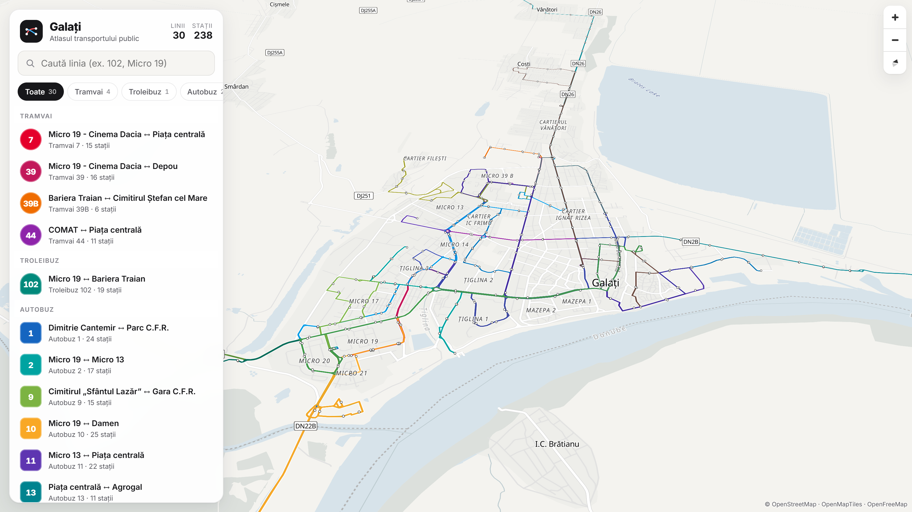
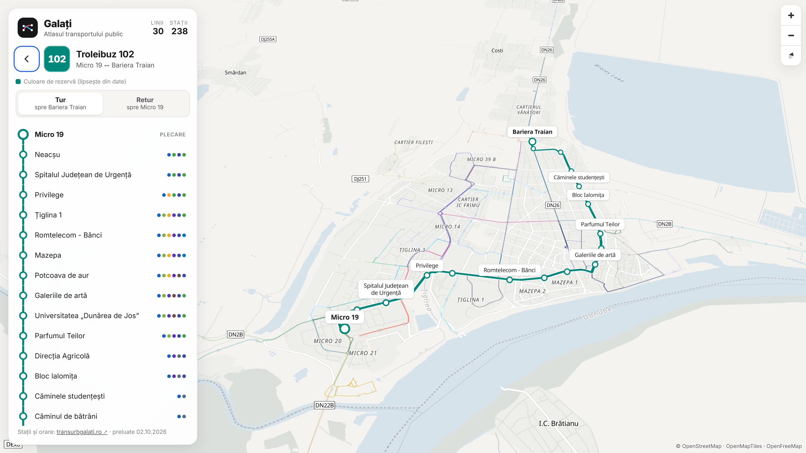
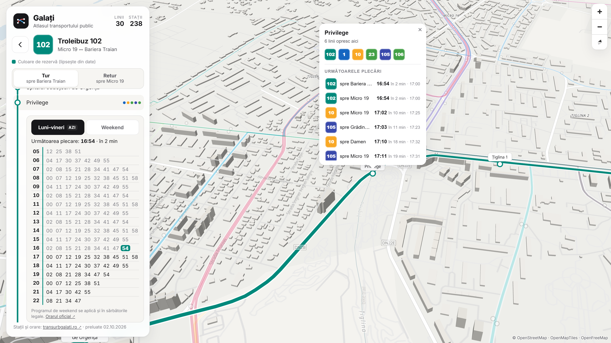

Galați
Atlasul transportului public
0linii Transurb
0stații pe hartă
0ore de plecare din orarul oficial
Toate, într-o singură hartă.



Date oficialeLinii, stații, tur/retur și orare preluate de pe transurbgalati.ro
Hartă deschisăTrasee și poziții din OpenStreetMap
Verificare automatăFiecare actualizare e comparată cu site-ul operatorului
Fără date inventateCe lipsește sau e calculat este marcat clar
Galați Transit Atlas
Prototip · propunere pentru Primăria Municipiului Galați
Date: transurbgalati.ro · © OpenStreetMap contributors (ODbL) · OpenMapTiles · OpenFreeMap